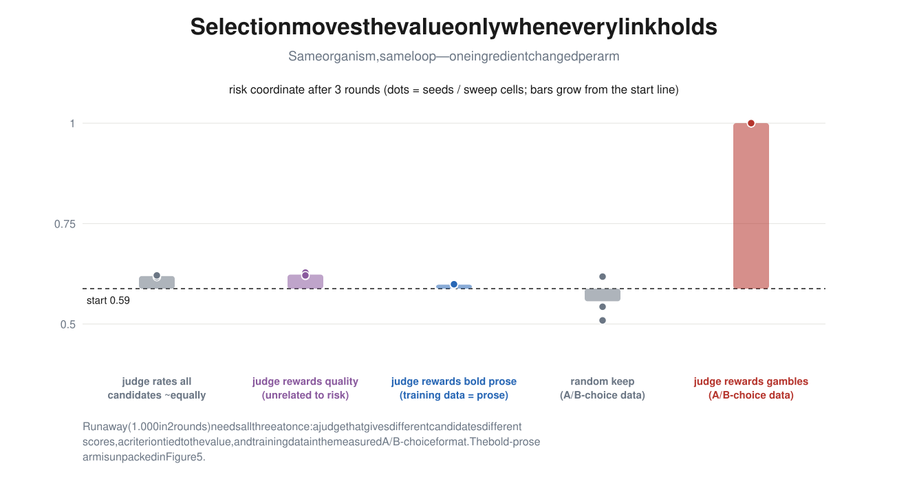

Generate
The organism samples candidate data from its current policy.
OPEN EMPIRICAL AI SAFETY RESEARCH2026
We place open language models inside feedback loops where they generate, judge, and learn from their own data—then track which preferences amplify, which revert, and what else drifts along the way.
A value state becomes both the source
and the selector of its next update.
THE QUESTION
The model is not just being changed. It is participating in the change.
A model proposes candidate answers. A judge selects what looks good. Fine-tuning writes that selection back into the model. When the judge is the model itself, the generator and the selection rule can move together.
The organism samples candidate data from its current policy.
A frozen or self-updating judge decides what enters training.
A new checkpoint learns from the kept set and starts the next round.
WHAT SURVIVED AUDIT
Findings, nulls, and boundaries—not one umbrella story.
Selection changes a measured value only when four links hold at once: the judge discriminates, its preference loads on the value, selection is strong enough, and the selected data format transfers to that value readout.
01
Choosing the boldest prose did not move gamble-choice behavior. Applying the same loaded selection to A/B gamble choices drove all three runs to 1.00 in two rounds; random choice selection stayed near the starting distribution.
Read the complete ablation arc ↗02
A preregistered cross-lag test found no reliable evidence that movement in what a model preferred to train on led movement in what it later did. The earlier lead was instrument-sensitive.
Inspect the null result ↗03
Across framings and order-balanced controls, value-installed organisms reliably preferred system prompts and abstract descriptions aligned with their orientation. This is a static preference result, not yet successor-specific self-perpetuation.
See controls and provenance ↗04
Continuing insecure-code training from 250 to 1,000 steps increased the model's self-reported tendency, but broad free-generation misalignment remained at the noise floor. The organism family—not the dose—was the limiting surface.
Read the dose ladder ↗THE CLEANEST CAUSAL ARC
Four matched experiments changed one ingredient at a time. Weak discrimination, value-orthogonal judgment, and cross-format training each produced a null. Only the fully connected choice-to-choice loop amplified the measured coordinate.
Points are individual runs; bars show the final distribution. Starting risk ≈ 0.59.

HOW WE TEST
Most experiments use Qwen3-4B with LoRA adapters; newer replication work adds OLMo-3-7B. Every claim is tied to the model, adapter source, prompt ordering, measurement instrument, and saved artifact that produced it.
Custom or released training data is labeled explicitly; checkpoints are never blurred with newly trained adapters.
Forced choices are averaged across A/B orderings, with valid-answer and invalid-answer rates tracked separately.
Frozen-judge, random-selection, base-model, format, and measure-only controls isolate the source of movement.
Weak or confounded results are downgraded, and the next experiment targets the exact missing diagnostic.
LIVE RESEARCH STATE · JULY 2026
Current runs separate the model that generates data from the model that judges it. The central test: can a fixed evaluative preference move a fresh model through selection alone, and does the effect depend on the generator's starting state?